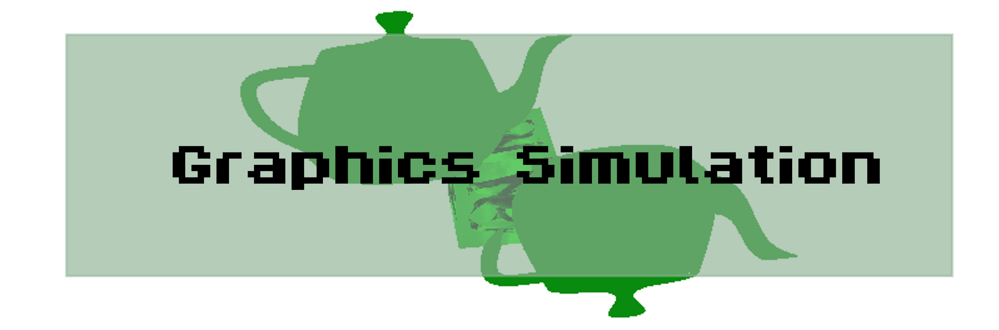

C++ | OpenGL | Glut
This was from my final semester of my first year, I developed a graphics simulation using OpenGl and glut
I was able to implement texturing, lighting and the loading of OBJ files.
The camera was potentially one of the most difficult pieces to implement, to move the camera in a way the
user would expect I had to find the left, right, forwards, backwards vectors relative to the current
position and direction. Then using these vectors I had to use vector maths to modify the current position
and facing vectors.
I also implemented a function where the camera could lock on to an object so as the camera moved where you
were looking didn't this was implemented using a bool so when the function is in use the facing vector was
set and did not change.
To allow for changing of settings during runtime I implemented a menu, from here you can alter do
four options:
1. Select & Rotate Objects
2. Lock the camera on an object
3. Change the cubes textures
4. Reset the camera
The select and rotate objects allows you to select a teapot and rotate that along 4 axis
it works by using a linked list and selecting the teapot and rotating its values when needed
Locking the camera simply works by setting the camera look coordinates at the object then not
changing them when moving the camera
Changing the cubes texture is again simple, two variables storing the textures and changing the
pointer used when drawing the cubes
Resetting camera takes the camera back to default positions incase you get lost.